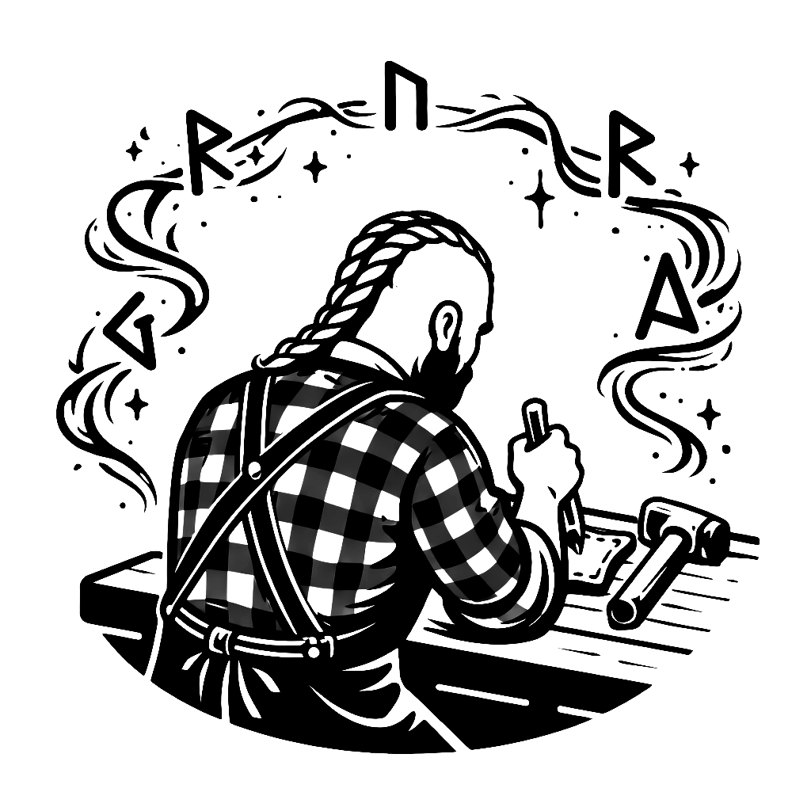

2024
Where it turned inward.
A quieter year, but an important one.
Health forced me to slow down, but even in limited output, the work became more focused. This was the beginning of original design.
The Rogue. The Hanged One.
For the first time, I was not just learning or iterating. I was creating from within.
I also created the Unofficial Helldiver Wallet, blending inspiration from outside worlds into my own craft.
Less quantity. More intention.
Gallery images for this year can be added here later. When you add them to this page inside a
.gallery container, the homepage featured work can automatically pull from them.